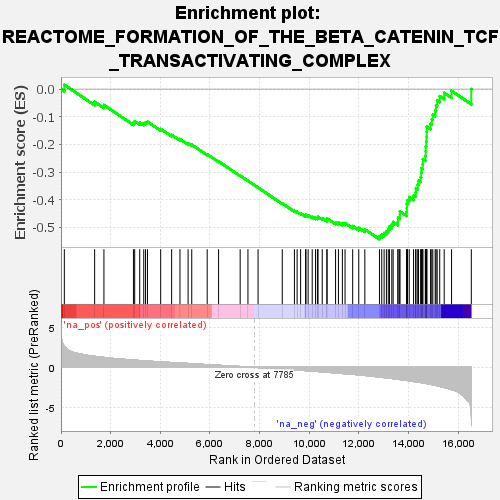
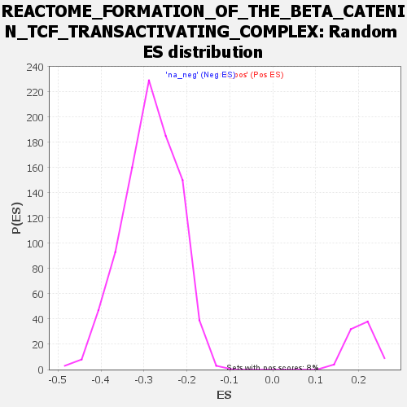

| | | Dataset | all_genes |
| Phenotype | NoPhenotypeAvailable |
| Upregulated in class | na_neg |
| GeneSet | REACTOME_FORMATION_OF_THE_BETA_CATENIN_TCF_TRANSACTIVATING_COMPLEX |
| Enrichment Score (ES) | -0.5430916 |
| Normalized Enrichment Score (NES) | -1.908826 |
| Nominal p-value | 0.0 |
| FDR q-value | 0.002356951 |
| FWER p-Value | 0.076 |
Table: GSEA Results Summary

Fig 1: Enrichment plot: REACTOME_FORMATION_OF_THE_BETA_CATENIN_TCF_TRANSACTIVATING_COMPLEX
Profile of the Running ES Score & Positions of GeneSet Members on the Rank Ordered List
| SYMBOL | RANK IN GENE LIST | RANK METRIC SCORE | RUNNING ES | CORE ENRICHMENT | | 1 | CDC73 | 134 | 2.637 | 0.0157 | No |
| 2 | H3-3A | 1355 | 1.380 | -0.0460 | No |
| 3 | LEO1 | 1729 | 1.241 | -0.0574 | No |
| 4 | AXIN2 | 2918 | 0.909 | -0.1214 | No |
| 5 | TCF7L1 | 2968 | 0.898 | -0.1163 | No |
| 6 | H2AZ2 | 3171 | 0.852 | -0.1209 | No |
| 7 | PYGO1 | 3333 | 0.814 | -0.1233 | No |
| 8 | KAT5 | 3405 | 0.802 | -0.1204 | No |
| 9 | ASH2L | 3483 | 0.786 | -0.1179 | No |
| 10 | LEF1 | 4015 | 0.678 | -0.1441 | No |
| 11 | BCL9 | 4456 | 0.597 | -0.1654 | No |
| 12 | CTNNB1 | 4792 | 0.535 | -0.1810 | No |
| 13 | RBBP5 | 5119 | 0.484 | -0.1964 | No |
| 14 | TCF4 | 5266 | 0.456 | -0.2012 | No |
| 15 | TLE1 | 5888 | 0.340 | -0.2358 | No |
| 16 | RUVBL1 | 6347 | 0.253 | -0.2614 | No |
| 17 | HDAC1 | 7216 | 0.107 | -0.3132 | No |
| 18 | PYGO2 | 7530 | 0.051 | -0.3317 | No |
| 19 | CREBBP | 7937 | -0.024 | -0.3562 | No |
| 20 | H2AC18 | 8912 | -0.208 | -0.4135 | No |
| 21 | TERT | 9402 | -0.308 | -0.4405 | No |
| 22 | H3-3B | 9510 | -0.330 | -0.4440 | No |
| 23 | H4C11 | 9651 | -0.364 | -0.4492 | No |
| 24 | TLE2 | 9852 | -0.408 | -0.4577 | No |
| 25 | SMARCA4 | 9866 | -0.413 | -0.4548 | No |
| 26 | TRRAP | 9954 | -0.431 | -0.4562 | No |
| 27 | H4C8 | 10118 | -0.469 | -0.4618 | No |
| 28 | H4C14 | 10252 | -0.501 | -0.4654 | No |
| 29 | H2BC9 | 10328 | -0.517 | -0.4653 | No |
| 30 | MEN1 | 10353 | -0.522 | -0.4620 | No |
| 31 | EP300 | 10522 | -0.568 | -0.4671 | No |
| 32 | TLE4 | 10711 | -0.608 | -0.4730 | No |
| 33 | H2AX | 10714 | -0.609 | -0.4676 | No |
| 34 | H4C1 | 11059 | -0.692 | -0.4823 | No |
| 35 | BCL9L | 11174 | -0.726 | -0.4827 | No |
| 36 | H2BC21 | 11333 | -0.770 | -0.4853 | No |
| 37 | H4C13 | 11441 | -0.796 | -0.4846 | No |
| 38 | TCF7L2 | 11748 | -0.870 | -0.4953 | No |
| 39 | TLE3 | 11993 | -0.939 | -0.5017 | No |
| 40 | H3C4 | 12237 | -1.014 | -0.5073 | No |
| 41 | H2BC12 | 12827 | -1.214 | -0.5321 | Yes |
| 42 | TCF7 | 12918 | -1.244 | -0.5263 | Yes |
| 43 | H4C12 | 13014 | -1.279 | -0.5206 | Yes |
| 44 | H2BC17 | 13107 | -1.313 | -0.5143 | Yes |
| 45 | H3C6 | 13182 | -1.345 | -0.5066 | Yes |
| 46 | H2BC14 | 13229 | -1.363 | -0.4971 | Yes |
| 47 | H2BC3 | 13325 | -1.395 | -0.4902 | Yes |
| 48 | H4C2 | 13377 | -1.412 | -0.4806 | Yes |
| 49 | H2BC13 | 13571 | -1.489 | -0.4788 | Yes |
| 50 | H2BC11 | 13574 | -1.491 | -0.4655 | Yes |
| 51 | H3C12 | 13646 | -1.524 | -0.4560 | Yes |
| 52 | H2AJ | 13647 | -1.525 | -0.4422 | Yes |
| 53 | H2BC10 | 13921 | -1.634 | -0.4440 | Yes |
| 54 | H2BC5 | 13928 | -1.637 | -0.4296 | Yes |
| 55 | RUNX3 | 13931 | -1.637 | -0.4149 | Yes |
| 56 | H4C5 | 13957 | -1.648 | -0.4015 | Yes |
| 57 | H3C3 | 14026 | -1.683 | -0.3905 | Yes |
| 58 | KMT2D | 14200 | -1.772 | -0.3850 | Yes |
| 59 | H4C9 | 14285 | -1.801 | -0.3738 | Yes |
| 60 | H2BC7 | 14296 | -1.805 | -0.3581 | Yes |
| 61 | H3C7 | 14369 | -1.845 | -0.3458 | Yes |
| 62 | H3C1 | 14400 | -1.861 | -0.3307 | Yes |
| 63 | H2BC26 | 14486 | -1.895 | -0.3188 | Yes |
| 64 | H2BC4 | 14509 | -1.907 | -0.3029 | Yes |
| 65 | H3C14 | 14517 | -1.912 | -0.2860 | Yes |
| 66 | MYC | 14569 | -1.938 | -0.2716 | Yes |
| 67 | H2AC8 | 14573 | -1.939 | -0.2542 | Yes |
| 68 | H2AC7 | 14673 | -1.992 | -0.2422 | Yes |
| 69 | H3C10 | 14689 | -2.001 | -0.2251 | Yes |
| 70 | H3C11 | 14693 | -2.002 | -0.2071 | Yes |
| 71 | H2AC14 | 14713 | -2.016 | -0.1901 | Yes |
| 72 | H4C16 | 14727 | -2.025 | -0.1725 | Yes |
| 73 | H2AC4 | 14730 | -2.025 | -0.1543 | Yes |
| 74 | H4C4 | 14732 | -2.027 | -0.1361 | Yes |
| 75 | H3C2 | 14885 | -2.125 | -0.1261 | Yes |
| 76 | H4C3 | 14934 | -2.159 | -0.1095 | Yes |
| 77 | H2BC6 | 14976 | -2.181 | -0.0923 | Yes |
| 78 | H2AC19 | 15071 | -2.247 | -0.0777 | Yes |
| 79 | H2BC15 | 15107 | -2.270 | -0.0593 | Yes |
| 80 | H3C13 | 15151 | -2.304 | -0.0410 | Yes |
| 81 | H2AC20 | 15254 | -2.386 | -0.0257 | Yes |
| 82 | H2BC8 | 15434 | -2.515 | -0.0138 | Yes |
| 83 | H2AC6 | 15731 | -2.781 | -0.0066 | Yes |
| 84 | H3C8 | 16526 | -6.120 | 0.0004 | Yes |
Table: GSEA details [plain text format]

Fig 2: REACTOME_FORMATION_OF_THE_BETA_CATENIN_TCF_TRANSACTIVATING_COMPLEX: Random ES distribution
Gene set null distribution of ES for REACTOME_FORMATION_OF_THE_BETA_CATENIN_TCF_TRANSACTIVATING_COMPLEX